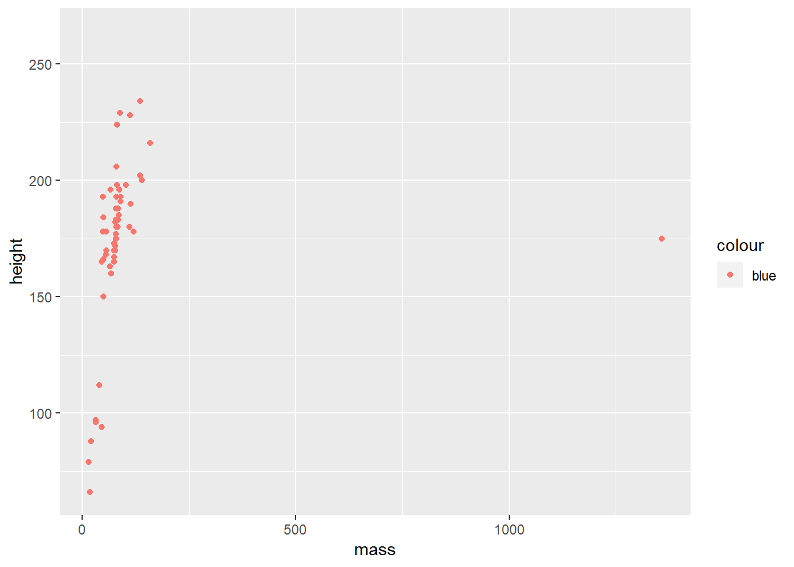
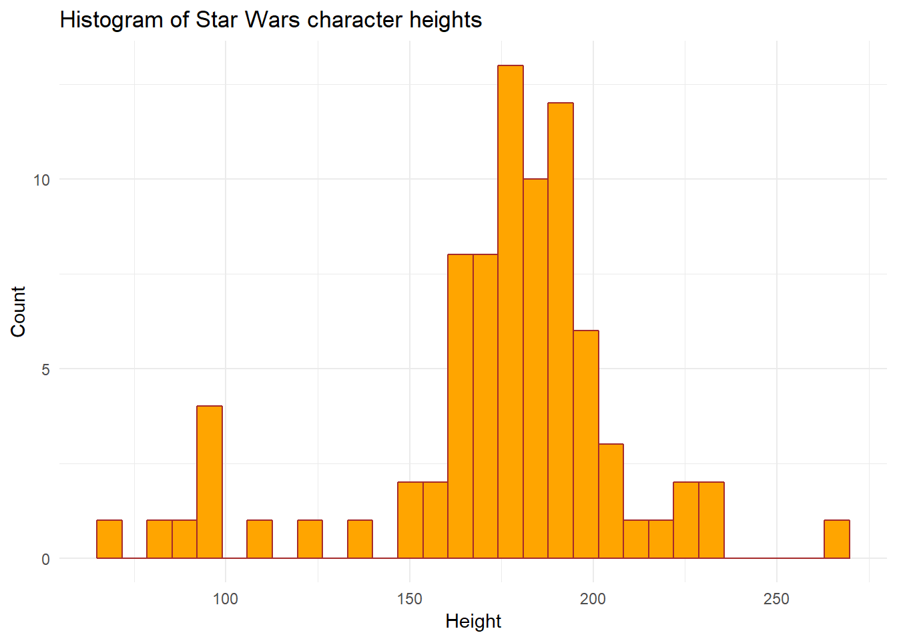

lecture4
Last updated: 2018-10-31
workflowr checks: (Click a bullet for more information)-
✖ R Markdown file: uncommitted changes
The R Markdown file has unstaged changes. To know which version of the R Markdown file created these results, you’ll want to first commit it to the Git repo. If you’re still working on the analysis, you can ignore this warning. When you’re finished, you can runwflow_publishto commit the R Markdown file and build the HTML. -
✔ Environment: empty
Great job! The global environment was empty. Objects defined in the global environment can affect the analysis in your R Markdown file in unknown ways. For reproduciblity it’s best to always run the code in an empty environment.
-
✔ Seed:
set.seed(20181026)The command
set.seed(20181026)was run prior to running the code in the R Markdown file. Setting a seed ensures that any results that rely on randomness, e.g. subsampling or permutations, are reproducible. -
✔ Session information: recorded
Great job! Recording the operating system, R version, and package versions is critical for reproducibility.
-
Great! You are using Git for version control. Tracking code development and connecting the code version to the results is critical for reproducibility. The version displayed above was the version of the Git repository at the time these results were generated.✔ Repository version: 091f906
Note that you need to be careful to ensure that all relevant files for the analysis have been committed to Git prior to generating the results (you can usewflow_publishorwflow_git_commit). workflowr only checks the R Markdown file, but you know if there are other scripts or data files that it depends on. Below is the status of the Git repository when the results were generated:
Note that any generated files, e.g. HTML, png, CSS, etc., are not included in this status report because it is ok for generated content to have uncommitted changes.Unstaged changes: Modified: analysis/lecture4.Rmd
Expand here to see past versions:
Read Chapters 3 and 5: http://r4ds.had.co.nz/transform.html
review about vectorization
In class example (from the Euler Project) If we list all the natural numbers below 10 that are multiples of 3 or 5, we get 3, 5, 6 and 9. The sum of these multiples is 23. Find the sum of all the multiples of 3 or 5 below 1000. First write this in a loop.
- Loop form
natural_numbers <- 1:1000
sum_value <- 0
for(i in 1:length(natural_numbers)) {
## Is natural numbers divisible by 3?
## Is natural numbers divisible by 5?
if(!natural_numbers[i] %% 3 | !natural_numbers[i] %% 5) {
# print(natural_numbers[i])
sum_value <- sum_value + natural_numbers[i]
}
}
sum_value[1] 234168## Vectorized form
new_vector <- sum(ifelse(!natural_numbers %% 3 | !natural_numbers %% 5,
natural_numbers, 0))
new_indices <- ifelse(!natural_numbers %% 3 | !natural_numbers %% 5,
TRUE, FALSE)
natural_numbers[which(new_indices == TRUE)] [1] 3 5 6 9 10 12 15 18 20 21 24 25 27 30
[15] 33 35 36 39 40 42 45 48 50 51 54 55 57 60
[29] 63 65 66 69 70 72 75 78 80 81 84 85 87 90
[43] 93 95 96 99 100 102 105 108 110 111 114 115 117 120
[57] 123 125 126 129 130 132 135 138 140 141 144 145 147 150
[71] 153 155 156 159 160 162 165 168 170 171 174 175 177 180
[85] 183 185 186 189 190 192 195 198 200 201 204 205 207 210
[99] 213 215 216 219 220 222 225 228 230 231 234 235 237 240
[113] 243 245 246 249 250 252 255 258 260 261 264 265 267 270
[127] 273 275 276 279 280 282 285 288 290 291 294 295 297 300
[141] 303 305 306 309 310 312 315 318 320 321 324 325 327 330
[155] 333 335 336 339 340 342 345 348 350 351 354 355 357 360
[169] 363 365 366 369 370 372 375 378 380 381 384 385 387 390
[183] 393 395 396 399 400 402 405 408 410 411 414 415 417 420
[197] 423 425 426 429 430 432 435 438 440 441 444 445 447 450
[211] 453 455 456 459 460 462 465 468 470 471 474 475 477 480
[225] 483 485 486 489 490 492 495 498 500 501 504 505 507 510
[239] 513 515 516 519 520 522 525 528 530 531 534 535 537 540
[253] 543 545 546 549 550 552 555 558 560 561 564 565 567 570
[267] 573 575 576 579 580 582 585 588 590 591 594 595 597 600
[281] 603 605 606 609 610 612 615 618 620 621 624 625 627 630
[295] 633 635 636 639 640 642 645 648 650 651 654 655 657 660
[309] 663 665 666 669 670 672 675 678 680 681 684 685 687 690
[323] 693 695 696 699 700 702 705 708 710 711 714 715 717 720
[337] 723 725 726 729 730 732 735 738 740 741 744 745 747 750
[351] 753 755 756 759 760 762 765 768 770 771 774 775 777 780
[365] 783 785 786 789 790 792 795 798 800 801 804 805 807 810
[379] 813 815 816 819 820 822 825 828 830 831 834 835 837 840
[393] 843 845 846 849 850 852 855 858 860 861 864 865 867 870
[407] 873 875 876 879 880 882 885 888 890 891 894 895 897 900
[421] 903 905 906 909 910 912 915 918 920 921 924 925 927 930
[435] 933 935 936 939 940 942 945 948 950 951 954 955 957 960
[449] 963 965 966 969 970 972 975 978 980 981 984 985 987 990
[463] 993 995 996 999 1000Logic and control
##########################################################
#### Chapter 7: Logic and control
##########################################################
# #### Simple logical operators
a = TRUE
b = FALSE
a & b[1] FALSEa | b[1] TRUE!(a & b)[1] TRUE!a | !b[1] TRUE# #### Other operators that evaluate to TRUE or FALSE
x <- 10
x < 20[1] TRUEx <- 1:10
x < 5 [1] TRUE TRUE TRUE TRUE FALSE FALSE FALSE FALSE FALSE FALSEx == 6 [1] FALSE FALSE FALSE FALSE FALSE TRUE FALSE FALSE FALSE FALSE# #### if-else conditions
x <- 5
ifelse(x==4, 1, 0)[1] 0x <- 1:10
ifelse(x<=4, 1, 0) [1] 1 1 1 1 0 0 0 0 0 0y <- NULL
x <- seq(0.1, 1, by=0.1)
for(i in 1:10){
if(x[i] < 0.5){
y[i] <- x[i]^2
}else{
y[i] <- sqrt(x[i])}
}
# What does this evaluate to, and why?
(TRUE + TRUE) * FALSE[1] 0Install R Packages
##########################################################
#### Installing packages in R
##########################################################
## Package = fundamental unit of shareable code
## Bundles together code, data, documentation, tests, and is easy to share with others
## 3 main repositories for packages in R:
## CRAN: https://www.r-project.org/
## Bioconductor: http://bioconductor.org/ (packages oriented towards analysis of biological data)
## GitHub: at indivdual user's accounts, for example https://github.com/andreamrau/coseq
## Also there is now Neuroconductor: https://neuroconductor.org/ for imaging analysis
## There are > 6000 packages at CRAN alone! And growing rapidly!!
## => Chances are, someone has probably already solved a problem you're working on
## Make sure to give credit to package developers if you use their work! (citations etc)
## Let's practice installing a couple of packages:
# ## Tidyverse and devtools package from CRAN
install.packages(c("tidyverse", "devtools")) ## You only need to do this once per package
library(tidyverse)
library(devtools)
?tidyverse
## edgeR RNA-seq expression analysis package from Bioconductor
## This is just an example, we won't actually be using edgeR today
source("http://www.bioconductor.org/biocLite.R") ## You only need to do this once per package
biocLite("edgeR") ## You only need to do this once per package
library(edgeR)
vignette("edgeR")
# ## Install a GitHub package (using the devtools package above)
# ## This is just an example, we won't actually be using HTSFilter today
install_github("andreamrau/HTSFilter") ## You only need to do this once per package
library(HTSFilter)##########################################################
#### Core structures for analysis: data.frames and tibbles
##########################################################
## First of all: What is the tidyverse? https://www.tidyverse.org/
## - A "meta-package" that is an optionated collection of several R packages for data science
## - Includes ggplot2 (plotting), dplyr (transformating/summarizing dataframe content), tidyr (tidying dataframes), purr, tibble
## - Founded by Hadley Wickham and many others at RStudio
# ## Pipe operator: f(x) can be rewritten as x %>% f
data(iris)
head(iris) Sepal.Length Sepal.Width Petal.Length Petal.Width Species
1 5.1 3.5 1.4 0.2 setosa
2 4.9 3.0 1.4 0.2 setosa
3 4.7 3.2 1.3 0.2 setosa
4 4.6 3.1 1.5 0.2 setosa
5 5.0 3.6 1.4 0.2 setosa
6 5.4 3.9 1.7 0.4 setosairis %>% head() Sepal.Length Sepal.Width Petal.Length Petal.Width Species
1 5.1 3.5 1.4 0.2 setosa
2 4.9 3.0 1.4 0.2 setosa
3 4.7 3.2 1.3 0.2 setosa
4 4.6 3.1 1.5 0.2 setosa
5 5.0 3.6 1.4 0.2 setosa
6 5.4 3.9 1.7 0.4 setosamean.sepal <- mean(iris$Sepal.Length)
mean.sepal <- iris$Sepal.Length %>% mean()
x <- c(0.109, 0.359, 0.63, 0.996, 0.515, 0.142, 0.017, 0.829, 0.907)
round(exp(diff(log(x))), 1)[1] 3.3 1.8 1.6 0.5 0.3 0.1 48.8 1.1x %>% log() %>%
diff() %>%
exp() %>%
round(1)[1] 3.3 1.8 1.6 0.5 0.3 0.1 48.8 1.1dplyr, pipe operator
# ##########################################################
# #### dplyr, pipe operator
# ##########################################################
#
data(starwars)
#
## Look at data: what do rows represent? how about columns?
starwars# A tibble: 87 x 13
name height mass hair_color skin_color eye_color birth_year gender
<chr> <int> <dbl> <chr> <chr> <chr> <dbl> <chr>
1 Luke~ 172 77 blond fair blue 19 male
2 C-3PO 167 75 <NA> gold yellow 112 <NA>
3 R2-D2 96 32 <NA> white, bl~ red 33 <NA>
4 Dart~ 202 136 none white yellow 41.9 male
5 Leia~ 150 49 brown light brown 19 female
6 Owen~ 178 120 brown, gr~ light blue 52 male
7 Beru~ 165 75 brown light blue 47 female
8 R5-D4 97 32 <NA> white, red red NA <NA>
9 Bigg~ 183 84 black light brown 24 male
10 Obi-~ 182 77 auburn, w~ fair blue-gray 57 male
# ... with 77 more rows, and 5 more variables: homeworld <chr>,
# species <chr>, films <list>, vehicles <list>, starships <list>#
# ## filter(): filter data frame on row
filter(starwars, species=="Droid")# A tibble: 5 x 13
name height mass hair_color skin_color eye_color birth_year gender
<chr> <int> <dbl> <chr> <chr> <chr> <dbl> <chr>
1 C-3PO 167 75 <NA> gold yellow 112 <NA>
2 R2-D2 96 32 <NA> white, bl~ red 33 <NA>
3 R5-D4 97 32 <NA> white, red red NA <NA>
4 IG-88 200 140 none metal red 15 none
5 BB8 NA NA none none black NA none
# ... with 5 more variables: homeworld <chr>, species <chr>, films <list>,
# vehicles <list>, starships <list>starwars[which(starwars$species=="Droid"),] ## base R equivalent# A tibble: 5 x 13
name height mass hair_color skin_color eye_color birth_year gender
<chr> <int> <dbl> <chr> <chr> <chr> <dbl> <chr>
1 C-3PO 167 75 <NA> gold yellow 112 <NA>
2 R2-D2 96 32 <NA> white, bl~ red 33 <NA>
3 R5-D4 97 32 <NA> white, red red NA <NA>
4 IG-88 200 140 none metal red 15 none
5 BB8 NA NA none none black NA none
# ... with 5 more variables: homeworld <chr>, species <chr>, films <list>,
# vehicles <list>, starships <list>starwars %>% filter(species=="Droid") ## equivalent with a pipe# A tibble: 5 x 13
name height mass hair_color skin_color eye_color birth_year gender
<chr> <int> <dbl> <chr> <chr> <chr> <dbl> <chr>
1 C-3PO 167 75 <NA> gold yellow 112 <NA>
2 R2-D2 96 32 <NA> white, bl~ red 33 <NA>
3 R5-D4 97 32 <NA> white, red red NA <NA>
4 IG-88 200 140 none metal red 15 none
5 BB8 NA NA none none black NA none
# ... with 5 more variables: homeworld <chr>, species <chr>, films <list>,
# vehicles <list>, starships <list>starwars %>% filter(., species=="Droid") ## equivalent with a pipe# A tibble: 5 x 13
name height mass hair_color skin_color eye_color birth_year gender
<chr> <int> <dbl> <chr> <chr> <chr> <dbl> <chr>
1 C-3PO 167 75 <NA> gold yellow 112 <NA>
2 R2-D2 96 32 <NA> white, bl~ red 33 <NA>
3 R5-D4 97 32 <NA> white, red red NA <NA>
4 IG-88 200 140 none metal red 15 none
5 BB8 NA NA none none black NA none
# ... with 5 more variables: homeworld <chr>, species <chr>, films <list>,
# vehicles <list>, starships <list>starwars %>% filter(species=="Droid" & eye_color=="red")# A tibble: 3 x 13
name height mass hair_color skin_color eye_color birth_year gender
<chr> <int> <dbl> <chr> <chr> <chr> <dbl> <chr>
1 R2-D2 96 32 <NA> white, bl~ red 33 <NA>
2 R5-D4 97 32 <NA> white, red red NA <NA>
3 IG-88 200 140 none metal red 15 none
# ... with 5 more variables: homeworld <chr>, species <chr>, films <list>,
# vehicles <list>, starships <list>new_df <- starwars %>%
filter(species=="Droid", eye_color=="red") ## 'and' conditions can be separated with comma# ## select(): filter data frame on column
starwars %>% select(mass, homeworld)
starwars %>% select(-hair_color) ## We can remove rows using a '-'
starwars %>%
filter(species=="Droid") %>%
select(name, mass) ## Filter and select can be combined using a pipe %>%
# ## mutate(): add new column to data frame
# ## Note: we generally avoid overwriting data in a data frame, better to create a new variable
starwars %>%
mutate(height_in_inches=0.393701 * height) %>%
View()
# ## group_by(): establish a grouping for downstream operations, remove with ungroup()
# ## tally(): count number of observations per grouping
starwars %>%
group_by(species) %>%
tally()
# ## summarize(): perform summary statistic on a column. Fun fact: this also exists as summarise()
starwars %>% summarize(mean_mass = mean(mass, na.rm=TRUE))
starwars %>%
group_by(species) %>%
summarize(mean_mass = mean(mass, na.rm=TRUE))
# ## arrange(): arrange a column
starwars %>% arrange(desc(mass))
starwars %>% arrange(mass)
# ## unique, na.omit()
starwars %>% unique()
starwars %>% na.omit()ggplot
# #-------------------------------------------------------------------------
# # An in-class example:
#
#
# ##########################################################
# #### If there's time: a quick start on ggplot2
# ##########################################################
#
# ## ggplot2: graphics package that implements a Grammar of Graphics (operates on dataframes)
# ## Explicit differentiation between data and a representation of the data
#
# ## ggplot2 grammar:
# ## data = dataframe being plotted
# ## geometrics = the geometric shape that represents the data (point, boxplot, histogram, violin, bar, etc)
# ## aesthetics = aesthetics of the geometric object (color, size, shape, etc)
#
# ## What are the differences between the ggplot2 and base R versions of this scatterplot?
ggplot(starwars, aes(x=mass, y=height)) +
geom_point()Warning: Removed 28 rows containing missing values (geom_point).plot(starwars$mass, starwars$height) ## base R version# ## NOTE: did you see that we are using '+' here for ggplot2 and not the pipe '%>%'?
## These are all the same
ggplot() +
geom_point(data=starwars, color="red",
aes(x=mass, y=height))Warning: Removed 28 rows containing missing values (geom_point).
ggplot() +
geom_point(data=starwars, color="red",
aes(x=mass, y=height))Warning: Removed 28 rows containing missing values (geom_point).ggplot(data=starwars) +
geom_point(color="red", aes(x=mass, y=height))Warning: Removed 28 rows containing missing values (geom_point).
ggplot(starwars, aes(x=mass, y=height)) +
geom_point(color="red")Warning: Removed 28 rows containing missing values (geom_point).
## If we place color inside of the aesthetics, it maps it to the data
ggplot(starwars, aes(x=mass, y=height, color=gender)) +
geom_point()Warning: Removed 28 rows containing missing values (geom_point).new_df <- starwars %>% filter(mass < 500)
ggplot(new_df,
aes(x=mass, y=height, color=gender)) +
geom_point()# ## We can change shape aesthetics too
ggplot(starwars, aes(x=mass, y=height, color=gender, shape=gender)) +
geom_point()Warning: Removed 31 rows containing missing values (geom_point).# ## Aesthetics can be place inside the relevant geom: the following two are equivalent
ggplot(starwars, aes(x=mass, y=height, color=gender, shape=gender)) +
geom_point()Warning: Removed 31 rows containing missing values (geom_point).
ggplot(starwars) +
geom_point(aes(x=mass, y=height, color=gender, shape=gender))Warning: Removed 31 rows containing missing values (geom_point).
# ## Aesthetics are only for mapping:
ggplot(starwars) +
geom_point(aes(x=mass, y=height, color="blue")) ## This doesn't workWarning: Removed 28 rows containing missing values (geom_point).
ggplot(starwars) +
geom_point(aes(x=mass, y=height), color="blue") ## This does workWarning: Removed 28 rows containing missing values (geom_point).# ## Can use multiple geoms, combine with dplyr functions
ggplot(filter(starwars, mass < 500), aes(x=mass, y=height)) +
geom_point() +
geom_line()# ## Other geoms: histograms, boxplots, density plots, violin plots, barplots
ggplot(starwars) +
geom_histogram(aes(x=height), fill="orange", color="brown")`stat_bin()` using `bins = 30`. Pick better value with `binwidth`.Warning: Removed 6 rows containing non-finite values (stat_bin).ggplot(starwars) +
geom_boxplot(aes(x="", y=log(mass)))Warning: Removed 28 rows containing non-finite values (stat_boxplot).ggplot(starwars) +
geom_boxplot(aes(x=gender, y=log(mass), fill=gender))Warning: Removed 28 rows containing non-finite values (stat_boxplot).ggplot(starwars) +
geom_violin(aes(x=gender, y=log(mass), fill=gender))Warning: Removed 28 rows containing non-finite values (stat_ydensity).ggplot(starwars) +
geom_bar(aes(x=gender, fill=gender))ggplot(starwars) +
geom_density(aes(x=log(mass), fill=gender))Warning: Removed 28 rows containing non-finite values (stat_density).Warning: Groups with fewer than two data points have been dropped.
Warning: Groups with fewer than two data points have been dropped.ggplot(starwars) +
geom_density(aes(x=log(mass), fill=gender), alpha=0.9) ## Can add transparency to objectWarning: Removed 28 rows containing non-finite values (stat_density).
Warning: Groups with fewer than two data points have been dropped.
Warning: Groups with fewer than two data points have been dropped.ggplot(starwars) +
geom_density(aes(x=log(mass),
fill=factor(gender, levels=c("hermaphrodite", "none",
"NA", "male", "female"))), alpha=0.9) Warning: Removed 28 rows containing non-finite values (stat_density).
Warning: Groups with fewer than two data points have been dropped.
Warning: Groups with fewer than two data points have been dropped.# ## Some additional options
ggplot(starwars) +
geom_histogram(aes(x=height), fill="orange", color="brown") +
xlab("Height") +
ylab("Count") +
ggtitle("Histogram of Star Wars character heights")`stat_bin()` using `bins = 30`. Pick better value with `binwidth`.Warning: Removed 6 rows containing non-finite values (stat_bin).g1 <- ggplot(starwars) +
geom_histogram(aes(x=height), fill="orange", color="brown")
# ## Change gray background theme:
# ## http://ggplot2.tidyverse.org/reference/ggtheme.html
# ## https://cran.r-project.org/web/packages/ggthemes/vignettes/ggthemes.html
ggplot(starwars) +
geom_histogram(aes(x=height), fill="orange", color="brown") +
xlab("Height") +
ylab("Count") +
ggtitle("Histogram of Star Wars character heights") +
theme_minimal()`stat_bin()` using `bins = 30`. Pick better value with `binwidth`.Warning: Removed 6 rows containing non-finite values (stat_bin).
## Next time: changing the order of plots, changing colors: scale_FILLCOLOR_brewer,
## scale_color_gradient(), geom_smooth, more advanced dplyr
## http://ggplot2.tidyverse.org/reference/#scalesSession information
sessionInfo()R version 3.5.1 (2018-07-02)
Platform: x86_64-w64-mingw32/x64 (64-bit)
Running under: Windows 10 x64 (build 17134)
Matrix products: default
locale:
[1] LC_COLLATE=English_United States.1252
[2] LC_CTYPE=English_United States.1252
[3] LC_MONETARY=English_United States.1252
[4] LC_NUMERIC=C
[5] LC_TIME=English_United States.1252
attached base packages:
[1] stats graphics grDevices utils datasets methods base
other attached packages:
[1] bindrcpp_0.2.2 edgeR_3.22.5 limma_3.36.5 usethis_1.4.0
[5] devtools_2.0.1 forcats_0.3.0 stringr_1.3.1 dplyr_0.7.7
[9] purrr_0.2.5 readr_1.1.1 tidyr_0.8.2 tibble_1.4.2
[13] ggplot2_3.1.0 tidyverse_1.2.1
loaded via a namespace (and not attached):
[1] locfit_1.5-9.1 Rcpp_0.12.19 lubridate_1.7.4
[4] lattice_0.20-35 prettyunits_1.0.2 ps_1.2.0
[7] utf8_1.1.4 assertthat_0.2.0 rprojroot_1.3-2
[10] digest_0.6.18 R6_2.3.0 cellranger_1.1.0
[13] plyr_1.8.4 backports_1.1.2 evaluate_0.12
[16] httr_1.3.1 pillar_1.3.0 rlang_0.3.0.1
[19] lazyeval_0.2.1 readxl_1.1.0 rstudioapi_0.8
[22] whisker_0.3-2 callr_3.0.0 R.utils_2.7.0
[25] R.oo_1.22.0 rmarkdown_1.10 labeling_0.3
[28] desc_1.2.0 munsell_0.5.0 broom_0.5.0
[31] compiler_3.5.1 modelr_0.1.2 pkgconfig_2.0.2
[34] base64enc_0.1-3 pkgbuild_1.0.2 htmltools_0.3.6
[37] tidyselect_0.2.5 workflowr_1.1.1 fansi_0.4.0
[40] crayon_1.3.4 withr_2.1.2 R.methodsS3_1.7.1
[43] grid_3.5.1 nlme_3.1-137 jsonlite_1.5
[46] gtable_0.2.0 git2r_0.23.0 magrittr_1.5
[49] scales_1.0.0 cli_1.0.1 stringi_1.2.4
[52] fs_1.2.6 remotes_2.0.2 xml2_1.2.0
[55] tools_3.5.1 glue_1.3.0 hms_0.4.2
[58] processx_3.2.0 pkgload_1.0.2 yaml_2.2.0
[61] colorspace_1.3-2 sessioninfo_1.1.0 rvest_0.3.2
[64] memoise_1.1.0 knitr_1.20 bindr_0.1.1
[67] haven_1.1.2 This reproducible R Markdown analysis was created with workflowr 1.1.1